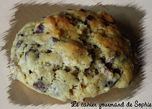

Cookies
Ingredients
15×
- 110 g de beurre mou
- 60 g de cassonade
- 60 g de sucre en poudre
- 0.5 c. à c. de vanille liquide
- 1 œuf
- 225 g de farine
- 0.5 c. à c. de levure
- 1 pincée de sel
- 100 g de pépites de chocolat

Préparation
Étape 1
Mélanger 110 g de beurre mou, 60 g de cassonade, 60 g de sucre en poudre et 0.5 c. à c. de vanille liquide.
Étape 2
Ajouter 1 œuf et fouetter. Ajouter 225 g de farine et 0.5 c. à c. de levure tamisées et 1 pincée de sel, mélanger à la spatule.
Étape 3
Ajouter 100 g de pépites de chocolat. Former des petites boules sur une plaque recouverte de papier sulfurisé.
Étape 4
Cuire 12min à 200ºC : les cookies doivent être dorés et le bord un peu brun.
Conseils
- Variantes : chocolat et noix de pécan, chocolat blanc et macadamia, chocolat blanc et fruits rouges.